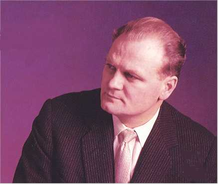

October 29, 1926
Born
1953
Married Henrietta Outerbridge
1957
Joined London's Royal Opera House, Covent Garden company
1958
Debuted as Siegmund in Die Walk�re
1959
Tenor in recording of Handel's Messiah
1959
San Francisco debut as Radames
1960
Debuted at the Metropolitan Opera as Canio in Pagliacci
1968
Made a Companion of the Order of Canada
1998
Retired
made his first recording as a reciter, in Enoch Arden
made his first recording as a reciter, in Enoch Arden